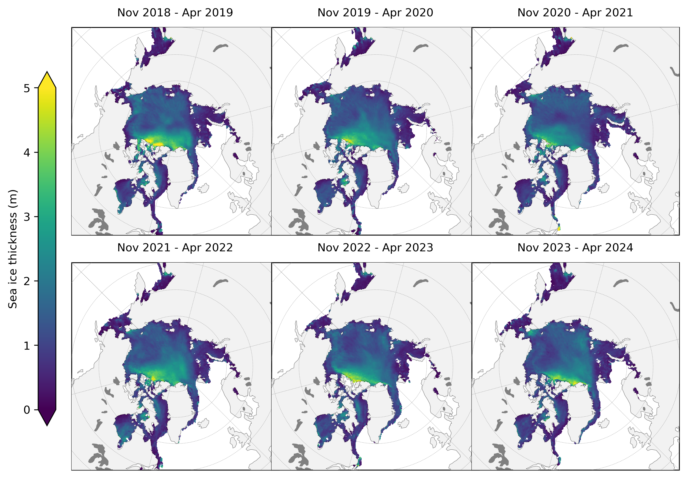
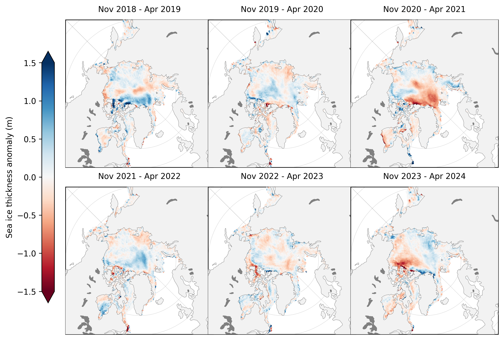

ICESat-2 Arctic Sea Ice State Analysis#
=============================================
Overview#
NASA’s Ice, Cloud, and Land Elevation Satellite-2 (ICESat-2) is an advanced satellite laser altimetry system designed to profile Earth’s polar regions with meter-scale horizontal resolution and centimeter-scale vertical precision. This makes it particularly well-suited for measuring Arctic sea ice thickness. This Jupyter Book provides a comprehensive analysis of winter Arctic sea ice thickness variability derived from ICESat-2 freeboards and NESOSIM snow loading since its launch in fall 2018.

Fig 1: Mean winter (November to April) Arctic sea ice thickness from the first six winters profiled by ICESat-2 (data from the monthly gridded IS2SITMOGR4 dataset).

Fig 2: Mean winter (November to April) Arctic sea ice thickness anomalies (relative to the six winter mean) from the first five winters profiled by ICESat-2.
Data Products#
The ICESat-2 Project Science Office has produced several official data products through the National Snow and Ice Data Center (NSIDC), including:
ATL10: Arctic and Southern Ocean sea ice freeboard dataset providing along-track estimates of sea ice elevation above the local sea surface
IS2SITMOGR4: Monthly gridded sea ice thickness estimates using snow loading from the NASA Eulerian Snow on Sea Ice Model (NESOSIM)
For detailed methodology, see our original methodology paper and the analysis of the first three winters.
Current Scope#
Focus on Arctic analysis due to higher confidence in snow-on-sea-ice conditions
Winter-only analysis (November-April) as melt ponds complicate summer retrievals
Regular updates as new data becomes available
Version History#
Version 1.3 (02/14/2025):
Added 2023-2024 winter analysis notebook
Updated read_IS2SITMOGR4 function with new zarr path for V3 data up to 2024
Version 1.2 (11/27/2023):
Added 2022-2023 winter analysis notebook
Described new Version 3 IS2SITMOGR4 dataset
Minor bug fixes
Version 1.1 (01/27/2023):
Added 2021-2022 winter analysis notebook
Minor bug fixes
Version 1.0 (12/23/2023):
First full release associated with TC paper (Petty et al., 2023)
Archived on Zenodo: https://zenodo.org/record/7474218
Contributors#
Alek Petty (Current book lead, summer 2022 onwards)
Nicole Keeney (Original book creator)
References#
Druckenmiller, M. L., Thoman, R., and T. Moon, Eds., (2024) The Arctic [in “State of the Climate in 2023”]. Bull. Amer. Meteor. Soc., 105 (8), S277–S330, doi: 10.1175/BAMS-D-24-0101.1.
Meier, W., A. Petty, S. Hendricks, et al., (2023), “Sea Ice”, NOAA Arctic Report Card 2023, T. A. Moon, M. L. Druckenmiller, and R. L. Thoman, Eds, doi: 10.25923/f5t4-b865.
Meier, W., A. Petty, S. Hendricks, et al., (2024), “Sea Ice”, NOAA Arctic Report Card 2024, T. A. Moon, M. L. Druckenmiller, and R. L. Thoman, Eds, doi: 10.25923/aksk-7p66.
Petty A. A., N. Keeney, A. Cabaj, P. Kushner, M. Bagnardi (2023), Winter Arctic sea ice thickness from ICESat-2: upgrades to freeboard and snow loading estimates and an assessment of the first three winters of data collection, The Cryosphere, 17, 127–156, doi: 10.5194/tc-17-127-2023
Petty, A. A., N. T. Kurtz, R. Kwok, T. Markus, T. A. Neumann (2020), Winter Arctic sea ice thickness from ICESat‐2 freeboards, Journal of Geophysical Research: Oceans, 125, e2019JC015764. doi:10.1029/2019JC015764
Thoman, R., M. L. Druckenmiller, and T. Moon,, Eds., (2023) The Arctic [in “State of the Climate in 2022”]. Bull. Amer. Meteor. Soc., 104 (9), S271–S321, doi: 10.1175/BAMS-D-23-0079.1
Using the book#
There are three different ways to use this Jupyter Book:
View the rendered Jupyter Notebooks by clicking through the links on the left. Note that there is no interactivity with this option.
Run the Notebooks interactively in Binder. Just click the Binder tab under the rocket ship icon at the top of each Notebook. This option is configured for all notebooks except the modules in the Helper Functions section and the Data Wrangling notebook.
Clone (or fork then clone) the GitHub repository and run the Jupyter Notebooks locally. Just click the repository tab under the GitHub icon at the top of this page.
Jupyter Book description#
Jupyter Books provide a novel means of compiling various related Jupyter Notebooks into one convenient and well-indexed location. Here, a series of Jupyter Notebooks are used to provide a visual demonstration of our efforts to analyze winter Arctic sea ice conditions, primiarly freeboard and thickness, derived from ICESat-2 data, along with other relevant datasets.
Accessing the data#
The monthly gridded ICESat-2 winter Arctic sea ice thickness data are archived and made publicly available at the NSIDC (https://nsidc.org/data/IS2SITMOGR4). However, to simplify our analysis we have also uploaded these same data to an AWS S3 Bucket. In this first release of this Jupyter Book we also generated and uploaded aggregated netcdf files containing all the data needed for the original analysis in an S3 bucket under the name IS2_jbook_dataset_201811-202104.nc and IS2_CS2_jbook_dataset_201811-202104.nc. These datasets contains all the gridded ICESat-2 sea ice thickness data along with all other datasets used in the notebook to help contextualize the sea ice and atmospheric conditions through each winter. All datasets included have been regridded to the same NSIDC North Polar Stereographic grid (the native grid of the ICESat-2 sea ice data used), to simplify the mapping and comparisons. See the Data Wrangling pages for more information each dataset and on on the regridding process.
Packages#
All of the notebooks in this notebook utilize xarray, a python package built for working with multi-dimensional data like the monthly gridded sea ice data. Xarray is especially useful for time series data and allows for easily plotting data on map projections via compatability with the python packages cartopy and hvplot.
License#
All content in this Jupyter Book is distributed under the MIT license.